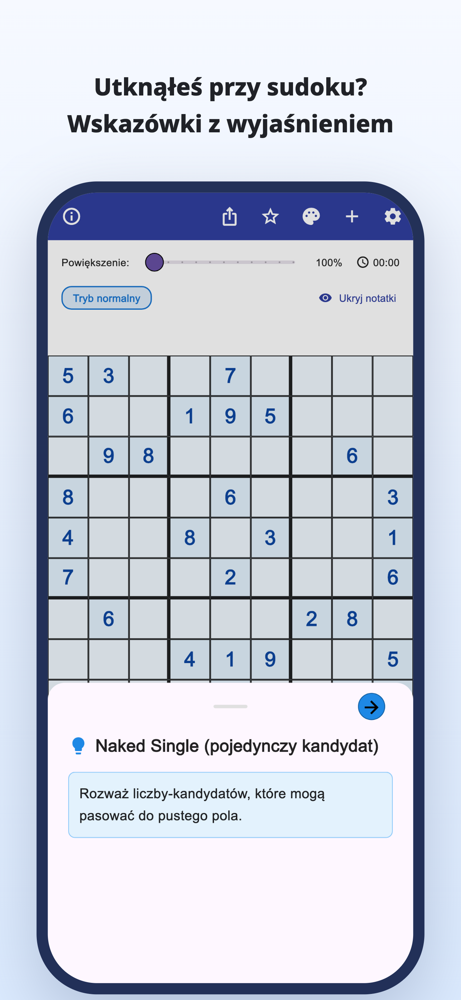
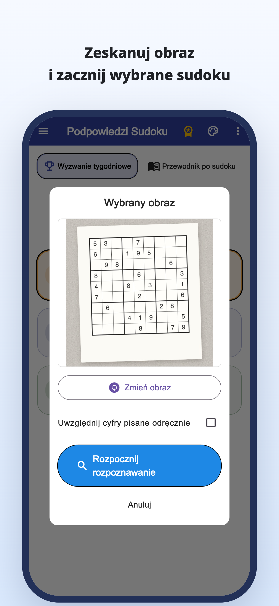
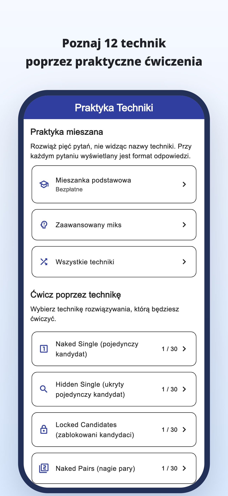
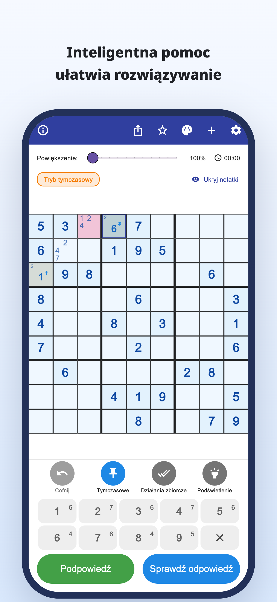
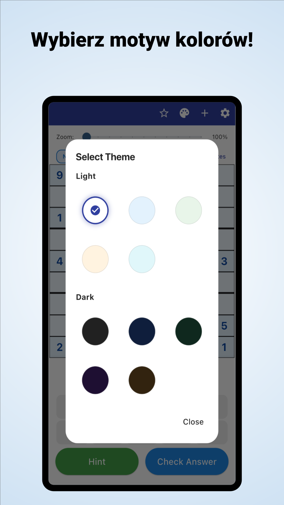

„Gdzie mam teraz spojrzeć?”
Sprawdzasz planszę raz za razem,
ale wciąż stoisz w tym samym miejscu.
Skanowanie aparatem · Wskazówki z wyjaśnieniem
Skanuj sudoku z gazet i czasopism.
Zrozum, dlaczego cyfra pasuje, i rozwiązuj dalej samodzielnie.
iPhone i Android / Pobierz bezpłatnie · Zakupy w aplikacji





Zdarza Ci się to podczas gry?
Sprawdzasz planszę raz za razem,
ale wciąż stoisz w tym samym miejscu.
Dlaczego właśnie ta cyfra ma być tutaj?
Przepisywanie rozwiązania nie wystarcza.
Chcesz przenieść rozwiązywane papierowe sudoku
i kontynuować w aplikacji.
Zamień trudny moment w punkt zaczepienia
Odczytaj sudoku z gazety lub czasopisma ze zdjęcia i ogranicz ręczne wpisywanie cyfr.
Odczyt ze zdjęciaPoznaj uzasadnienie ruchu i użyj go do znalezienia kolejnego kroku zamiast tylko wpisywać odpowiedź.
Wskazówki z wyjaśnieniemPrzeglądaj wyjaśnienia i ćwiczenia poszczególnych technik, a potem ucz się samodzielnie je dostrzegać.
Ćwiczenie technikDla tych, którzy lubią samodzielnie znajdować rozwiązania
Zaimportuj swoją planszę i kontynuuj od miejsca, w którym skończyłeś.
Zrozum trudny fragment, a potem rozwiązuj dalej samodzielnie.
Dla początkujących i osób chcących nauczyć się kolejnej techniki.
Czytaj · Wypróbuj · Ćwicz
Zacznij w przeglądarce.
Przeczytaj poradnik lub rozwiąż całą planszę.
Od notatek kandydatów po wyjaśnienia technik i ćwiczenia.
Spróbuj rozwiązać całą planszę, korzystając ze wskazówek w razie potrzeby.
Poznaj zasady i przyjemność łączenia kolejnych tropów.
Spójrz na komórkę z niebieską ramką i otwórz wskazówkę.
Wskazówka do następnego ruchu
Sprawdź kandydatów pustego pola.
To internetowy przykład jednego ruchu. Wygląd aplikacji jest inny.
Gdy utkniesz przy sudoku.
Pobierz Podpowiedzi Sudoku
Pobierz bezpłatnie · Zakupy w aplikacji
Aplikację można bezpłatnie pobrać i wypróbować. Wskazówki, sprawdzanie odpowiedzi i skanowanie zdjęć mają limity; część użyć wymaga obejrzenia reklamy wideo.
Premium to subskrypcja miesięczna lub roczna. Usuwa reklamy i zapewnia nieograniczone wskazówki oraz sprawdzanie odpowiedzi. Skanowanie zdjęć pozostaje limitowane także w Premium. Ceny i warunki znajdziesz w aplikacji.
Zaimportuj zdjęcie sudoku. Sprawdź rozpoznane cyfry i popraw błędy przed rozpoczęciem. Obsługiwane jest klasyczne sudoku 9×9.
Możesz rozwiązywać wbudowane plansze oraz korzystać z wyjaśnień i ćwiczeń technik. Część plansz i ćwiczeń wymaga Premium.
Oprócz demonstracji jednego ruchu możesz rozwiązać całą planszę w przeglądarce oraz skorzystać z poradników i ćwiczeń.
Poradnik sudoku